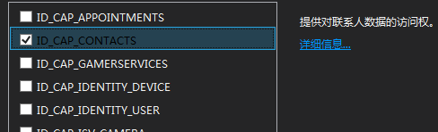
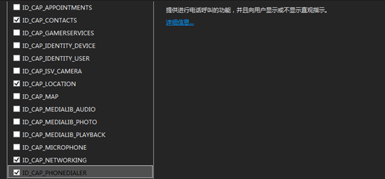

概述
在开发应用时，我们经常遇到需要调用系统内置的应用来完成一些功能，如拨打电话、发送短信和电子邮件、选择联系人等。Android中利用Intend不仅可以调用同意应用程序内Activity，也可以调用系统内置或第三方应用的Activity。IOS中通过URL方案调用内置应用。而windows phone 中引入了启动器和选择器的概念，通过使用启动器和选择器调用系统内置应用，Microsoft.Phone.Tasks命名空间中包含了调用内置应用完成各种功能的Task类型。
以下表格列出不同平台中，实现调用内置应用程序的实现方案：
|
Android |
IOS |
Windows phone |
|
利用Intent以及Action参数实现 |
利用URL方案，通过设置不同URL实现 |
利用启动器和选择器，通过具体Task类型实现 |
通过调用内置应用程序，我们可以实现拨打电话、发送短信和电子邮件、选择联系人等功能，这些功能在三种平台上均有相应的实现方法，只是复杂程度不同而已。以下首先介绍windows phone 中的启动器和选择器，然后针对一些常用功能进行详细介绍。
启动器和选择器
您可以在 Windows Phone 应用程序中使用启动器和选择器，以使用户能够与系统内置的应用程序进行交互，如发送短信、选择本地图片、选择电子邮件地址等。使用启动器和选择器，可以帮助您在 Windows Phone 平台中提供一致的用户体验。同时，使用启动器和选择器，您还可以通过提供附加功能令您的应用程序与众不同。
“启动器”是一种启动某个内置应用程序（如“联系人”应用程序或 Web 浏览器）的 API，用户可通过它完成任务。当出现新应用程序时，用户可以选择完成或取消任务。当用户关闭新应用程序时，通常会重新激活正在调用的应用程序。启动器任务的示例包括撰写电子邮件、在社交网络上共享链接，以及在浏览器中打开特定网站。
“选择器”是一种启动某个内置应用程序（如“联系人”应用程序或相机）的 API，用户可通过它完成任务。当出现新应用程序时，用户可以选择完成或取消任务。当用户关闭新应用程序时，通常会重新激活正在调用的应用程序并向其提供数据和状态。选择器任务的示例包括选择联系人电子邮件地址、选择手机中的照片，以及保存新的铃声。
Android和IOS没有启动器和选择器概念，但是也提供了相应的调用系统内置应用程序的方法。
使用启动器的一般步骤如下：
1. 创建一个启动器任务类型的实例。
2. 设置任何必需和可选的任务对象属性。这些属性决定着任务应用程序在调用时的行为。
3. 调用任务对象的 Show 方法。
使用选择器的一般步骤如下：
1. 创建选择器任务类型的实例。
2. 标识要在用户完成任务后运行的回调方法。
3. 设置任何必需和可选的任务对象属性。
4. 调用任务对象的 Show 方法。
5. 实现已完成事件处理程序，以在用户完成任务后捕获数据和状态。
注意事项
使用启动器与选择器需要注意一下事项：
l 启动器不会向应用程序返回数据或状态。
l 选择器可向应用程序返回数据和状态。但是，如果用户在新应用程序打开时按下“开始”按键，正在调用的应用程序可能永远无法重新激活。
特别需要注意的是，Windows Phone 应用程序开发人员通常（尤其是在使用启动器和选择器时）需要考虑的一个重要概念是，正在调用的应用程序在另一个应用程序启动时会被置于休眠状态或被逻辑删除。
在新任务应用程序启动时，您的应用程序会被取消激活并且不再运行。通常，操作系统会将您的应用程序置于休眠状态。在完成任务之后，用户可以返回到您的保留在内存中的应用程序，并且该应用程序会恢复为新应用程序启动之前的状态。但是，操作系统也可能会终止您的应用程序。在这种情况下，如果用户返回到您的应用程序，则它将是一个新实例，而且应用程序的状态不会自动恢复。
使用电话功能
概述
使用通话任务可使用户能够通过您的应用程序拨打电话。通话任务启动“手机”应用程序并显示您指定的手机号码和显示名称。只有当用户按下呼叫按钮之后，才会发起电话呼叫。
使用
IOS中使用
[[UIApplication sharedApplication] openURL:[NSURL URLWithString:@"tel://8004664411"]];Android中使用
String mobile = mobileText.getText().toString();
// 使用系统的电话拨号服务，必须去声明权限，在AndroidManifest.xml中进行声明
Intent intent = new Intent(Intent.ACTION_CALL, Uri.parse("tel:" + mobile));
PhoneActivity.this.startActivity(intent);Window Phone中使用
1. 添加引用
using Microsoft.Phone.Tasks;2. 启动任务
phoneCallTask.DisplayName = "Gage";
phoneCallTask.Show();注意事项
使用Windows Phone的电话功能与Android类似，需要先在manifest配置文件中设置允许使用电话相关功能，配置完成之后，即可使用三个平台不同的相关功能代码使用电话功能。Windows Phone修改配置文件只需要在“功能”选项卡下勾选上相应的项即可：


在 Windows Phone 模拟器中，发现的电话呼叫会始终保持连接，但是此连接是在模拟器中模拟执行的。模拟器使用假的 GSM 并且始终都具有假的用户身份识别模块 (SIM) 卡。
如果手机没有 SIM 卡，则应用程序会提示用户添加 SIM 卡。
使用短信功能
概述
使用短信撰写任务使用户可以通过应用程序发送消息。短信撰写任务启动“短信”应用程序，并显示一条新短信。您可以选择性地指定预填充新短信的收件人和消息正文。该消息在用户点按发送按键之后才会发送。
如果手机没有 SIM 卡，则在消息发送失败时，手机将会收到一条 Toast 通知。
使用
IOS中的使用
[[UIApplication sharedApplication] openURL:[NSURL
URLWithString:@"sms://466453"]];Android中的使用
String msgnumber="smsto:"+"你的号码";
Intent intentM = new Intent(Intent.ACTION_SENDTO,Uri.parse(msgnumber));
startActivity(intentM);Windows Phone中的使用
1. 添加引用
using Microsoft.Phone.Tasks;2. 启动任务
smsComposeTask.To = "2065550123";
smsComposeTask.Body = "Try this new application. It's great!";
smsComposeTask.Show();注意事项
在 Windows Phone 模拟器上，短信始终显示为成功发送，但实际并未发送消息。模拟器使用假的 GSM 并且始终都具有假的用户身份识别模块 (SIM) 卡。
使用浏览器
Android
Uri uri = Uri.parse("http://www.google.com");
Intent it = new Intent(Intent.ACTION_VIEW,uri);
startActivity(it);IOS
[[UIApplication sharedApplication] openURL:[NSURL URLWithString:@"http://www.cnblogs.com/foxmin"]];Windows phone
首先添加命名空间
using System;
using Microsoft.Phone.Tasks;然后，在应用程序中的所需位置添加以下代码，例如按键点击事件中。为了测试此过程，可以将该代码放置在页面构造函数中。以下是启动任务的代码。
webBrowserTask.Uri = new Uri("http://msdn.microsoft.com", UriKind.Absolute);
webBrowserTask.Show();打开电子邮件应用
Android
Uri uri = Uri.parse("mailto:xxx@abc.com");
Intent it = new Intent(Intent.ACTION_SENDTO, uri);
startActivity(it);IOS
NSString *stringURL = @"mailto:test@example.com";
NSURL *url = [NSURL URLWithString:stringURL];
[[UIApplication sharedApplication] openURL:url];Windows phone
EmailComposeTask emailComposeTask = new EmailComposeTask();
emailComposeTask.Subject = "message subject";
emailComposeTask.Body = "message body";
emailComposeTask.To = "recipient@example.com";
emailComposeTask.Cc = "cc@example.com";
emailComposeTask.Bcc = "bcc@example.com";
emailComposeTask.Show();操作电话簿
Android
Android中，通讯录信息是以外部数据库的形式存在的，获取和操作通讯录信息需要用到ContentResolver。
ContentResolver contentResolver = this.getContext().getContentResolver();
Uri uri = Uri.parse("content://com.android.contacts/contacts");
Cursor cursor = contentResolver.query(uri, null, null, null, null);
while(cursor.moveToNext()){
// 获取联系人姓名
StringBuilder sb = new StringBuilder();
String contactId = cursor.getString(cursor.getColumnIndex(ContactsContract.Contacts._ID));
String name = cursor.getString(cursor.getColumnIndex(ContactsContract.Contacts.DISPLAY_NAME));
sb.append("contactId=").append(contactId).append(",name=").append(name);
//获取联系人手机号码
Cursor phones = contentResolver.query(ContactsContract.CommonDataKinds.Phone.CONTENT_URI,
null,
ContactsContract.CommonDataKinds.Phone.CONTACT_ID +" = "+ contactId,
null, null);
while(phones.moveToNext()){
String phone = phones.getString(phones.getColumnIndex("data1"));
sb.append(",phone=").append(phone);
}IOS
首先获得地址簿句柄
1. #import
2. AddressBookRef ab = AddressBookCreate(); 查询电话簿
NSArray* array = (NSArray*)ABAddressBookCopyArrayOfAllPeople(ab);添加/删除 记录
1. CFErrorRef err;
2. BOOL success =ABAddressBookAddRecord(ab, record, &err);//添加
1. CFErrorRef err;
2. BOOL success =ABAddressBookRemoveRecord(ab, record, &err);//删除Windows phone 8
选择电话号码
1. 添加引用
using Microsoft.Phone.Tasks;2. 启动任务
PhoneNumberChooserTask phoneNumberChooserTask;
phoneNumberChooserTask = new PhoneNumberChooserTask();
phoneNumberChooserTask.Completed += new EventHandler(phoneNumberChooserTask_Completed);
phoneNumberChooserTask.Show(); 3. 获取选择结果
void phoneNumberChooserTask_Completed(object sender, PhoneNumberResult e)
{
if (e.TaskResult == TaskResult.OK)
{
MessageBox.Show("The phone number for " + e.DisplayName + " is " + e.PhoneNumber);
//Code to start a new call using the retrieved phone number.
//PhoneCallTask phoneCallTask = new PhoneCallTask();
//phoneCallTask.DisplayName = e.DisplayName;
//phoneCallTask.PhoneNumber = e.PhoneNumber;
//phoneCallTask.Show();
}
}保存联系人
1. 添加引用
using Microsoft.Phone.Tasks;2. 启动任务
SaveContactTask saveContactTask;
saveContactTask = new SaveContactTask();
saveContactTask.Completed += new EventHandler(saveContactTask_Completed);
saveContactTask.FirstName = "John";
saveContactTask.LastName = "Doe";
saveContactTask.MobilePhone = "2065550123";
saveContactTask.Show(); 3. 获取保存结果
void saveContactTask_Completed(object sender, SaveContactResult e)
{
switch (e.TaskResult)
{
//Logic for when the contact was saved successfully
case TaskResult.OK:
MessageBox.Show("Contact saved.");
break;
//Logic for when the task was cancelled by the user
case TaskResult.Cancel:
MessageBox.Show("Save cancelled.");
break;
//Logic for when the contact could not be saved
case TaskResult.None:
MessageBox.Show("Contact could not be saved.");
break;
}
}保存电话号码
1. 添加引用
using Microsoft.Phone.Tasks;2. 启动任务
SavePhoneNumberTask savePhoneNumberTask;
savePhoneNumberTask = new SavePhoneNumberTask();
savePhoneNumberTask.Completed += new EventHandler(savePhoneNumberTask_Completed);
savePhoneNumberTask.PhoneNumber = "2065550123";
savePhoneNumberTask.Show(); 3. 获取保存结果
void savePhoneNumberTask_Completed(object sender, TaskEventArgs e)
{
switch (e.TaskResult)
{
//Logic for when the number was saved successfully
case TaskResult.OK:
MessageBox.Show("Phone number saved.");
break;
//Logic for when the task was cancelled by the user
case TaskResult.Cancel:
MessageBox.Show("Save cancelled.");
break;
//Logic for when the number could not be saved
case TaskResult.None:
MessageBox.Show("Phone number could not be saved.");
break;
}
}